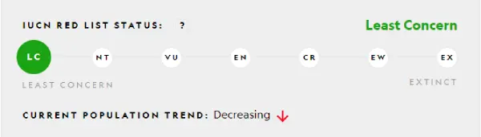

غرير العسل
يقول البعض أن غرير العسل لا يهتم ، لكن هذه السمعة ليست عادلة. في الواقع ، هؤلاء الأفراد متوسطي الحجم من عائلة ابن عرس لديهم مواقف فائقة الحجم.
الأرتباط
يرتبط غرير العسل ، المعروف أيضًا باسم الراتيل ، بالظربان وثعالب الماء والقوارض وغيرها من حيوانات الغرير. تحصل هذه الحيوانات النهمة على اسمها من ولعها بالتغذية على العسل ويرقات نحل العسل. كما يأكلون الحشرات ، والبرمائيات ، والزواحف ، والطيور ، والثدييات ، وكذلك الجذور ، والمصابيح ، والتوت ، والفواكه.
الجسد
على الرغم من أنهم يبحثون عن طعامهم في معظم الأوقات ، إلا أنهم سيسعدون من أكل اللحوم الحيوانات الأخرى أو يبحثون عن قتل الحيوانات الكبيرة عندما تسنح الفرصة. تسمح أسنانهم البارزة والحادة وقوانينهم الطويلة وبنيتهم الممتلئة بنزع اللحم بسهولة من العظام.
الموطن
يمكن العثور على غرير العسل في معظم أنحاء إفريقيا جنوب الصحراء والمملكة العربية السعودية وإيران وغرب آسيا.

يمكنهم التكيف مع مجموعة متنوعة من الظروف ، من الغابات المطيرة الدافئة إلى الجبال الباردة.
النطاق
يمكن أن تصل مساحتها إلى حوالي 193 ميلاً مربعاً (500 كيلومتر مربع).
البيوت
يجيد غرير العسل تحويل الشقوق الصخرية والأشجار المجوفة إلى ملاجئ ، كما سيصنع منازل في أوكار مهجورة لحيوانات أخرى مثل النيص والنمس الأصفر.
النشاط
تنشط معظم حيوانات غرير العسل على مدار اليوم ، على الرغم من أنها قد تفضل بالقرب من المستوطنات البشرية غطاء الظلام. غالبًا ما يتم رؤيتهم بمفردهم ، على الرغم من أنه ليس من غير المألوف اكتشاف أزواج التزاوج. يتزاوج غرير العسل طوال العام وغالبًا ما يكون لديه شبل واحد فقط في كل مرة.
التهديدات
على الرغم من انتشار غرير العسل على نطاق واسع ويعتبر وفيرًا ، إلا أنه يتم اصطيادهم أو اضطهادهم في مناطق معينة ، خاصةً عندما يتعارضون مع المزارعين ومربي النحل. كما تؤكل كلحوم الطرائد وتحصد لتجارة الطب التقليدي ؛ سمعة الشجاعة والمثابرة تجعل غرير العسل مشهورًا في الطب التقليدي.
التعداد
ومع هذه التهديدات فيبقى الأقل قلقاّّ

الحماية
يتطلب منع فقدان غرير العسل من تلك المناطق يقظة من السكان المحليين.